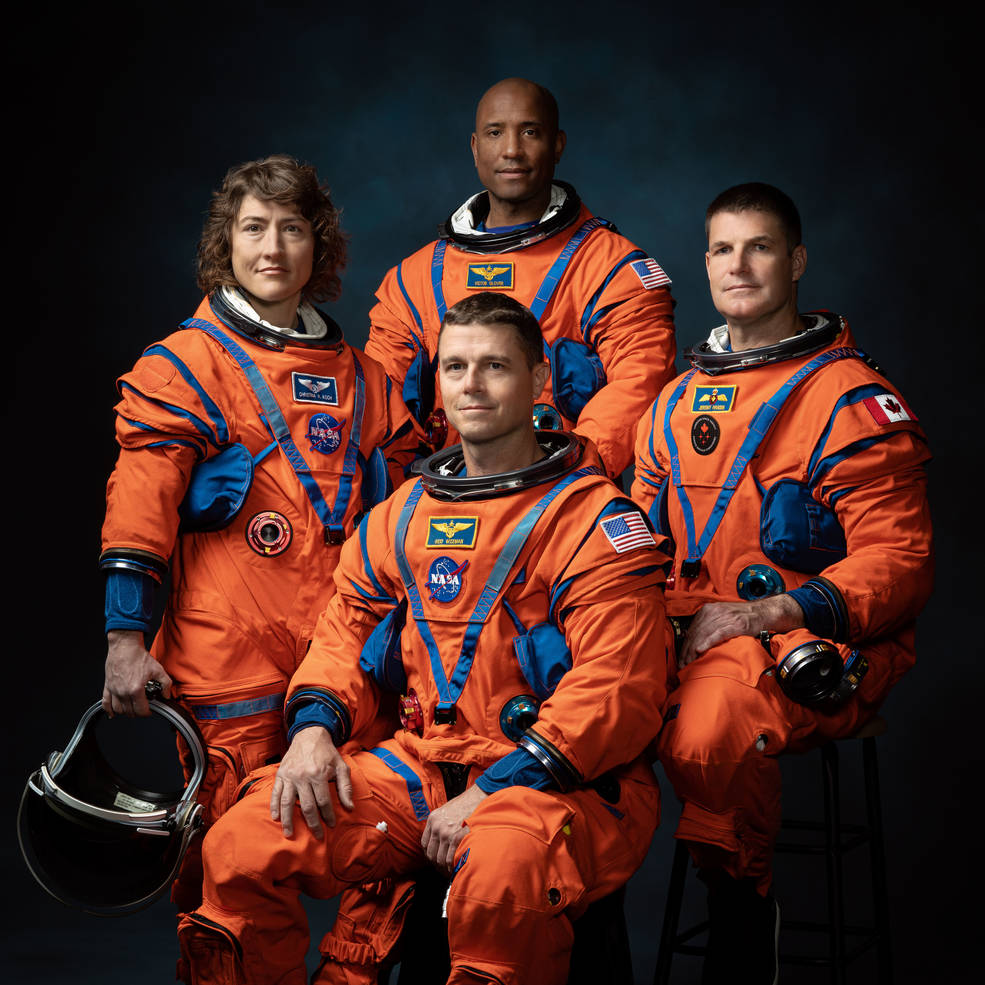

NASA and the Canadian Space Agency (CSA) announced the four astronauts who will venture around the Moon on Artemis II, the first crewed mission on NASA’s path to establishing a long-term presence at the Moon for science and exploration through Artemis.

During a gathering on Monday at Ellington Field in Houston, next to NASA's Johnson Space Center, the agencies made the crew members public.
"The Artemis -2 crew is an embodiment of thousands of people who have been working nonstop to take us to the stars. NASA Administrator Bill Nelson remarked, "This is their crew, this is our crew, and this is humanity's crew. "Each of the astronauts from NASA—Reid Wiseman, Victor Glover, Christina Hammock Koch, and CSA—Jeremy Hansen has a unique tale to tell, but as a group, they stand for our motto, E pluribus unum—out of many, one. For a new generation of star sailors and dreamers—the Artemis Generation—we are ushering in a new era of exploration together.
“We are going back to the Moon and Canada is at the center of this exciting journey,” said the Honorable François-Philippe Champagne, the minister responsible for the Canadian Space Agency. “Thanks to our longstanding collaboration with NASA, a Canadian astronaut will fly on this historic mission. On behalf of all Canadians, I want to congratulate Jeremy for being at the forefront of one of the most ambitious human endeavors ever undertaken. Canada’s participation in the Artemis program is not only a defining chapter of our history in space, but also a testament to the friendship and close partnership between our two nations.”
The flight, which is planned to build on the successful unmanned Artemis I mission finished in December, will prepare the way for future long-term human exploration missions to the Moon and eventually Mars. It will also place the first woman and first person of color on the Moon through the Artemis program. This is the agency's plan for exploring Mars and the Moon.
"These people, the crew of the Artemis II, will be the first humans to fly to the Moon's vicinity in more than 50 years. The crew includes the first woman, first person of color, and first Canadian to travel to the moon. According to Director Vanessa Wyche of NASA Johnson, "These four astronauts will symbolize the finest of humanity as they explore for the benefit of all. The Artemis Generation, economic, industrial, and academic relationships, as well as the development of human deep space travel, are all made possible by this mission.
The mission will be Glover’s second spaceflight, serving previously as pilot on NASA’s SpaceX Crew-1, which landed May 2, 2021, after 168 days in space. As a flight engineer aboard the space station for Expedition 64, he contributed to scientific investigations, technology demonstrations, and participated in four spacewalks.
Representing Canada, Hansen is making his first flight to space. A colonel in the Canadian Armed Forces and former fighter pilot, Hansen holds a Bachelor of Science in space science from Royal Military College of Canada in Kingston, Ontario, and a Master of Science in physics from the same institution in 2000, with a research focus on Wide Field of View Satellite Tracking. He was one of two recruits selected by CSA in May 2009 through the third Canadian Astronaut Recruitment Campaign and has served as Capcom in NASA's Mission Control Center at Johnson and, in 2017, became the first Canadian to be entrusted with leading a NASA astronaut class, leading the training of astronaut candidates from the United States and Canada.